You find the 2D shape editor on the menu bar at the top under Window. The fourth item down. Before you jump right in and get lost let me give you some info. First off, this tutorial is by no means the end-all of 2D Editor usage. In fact, it will be pretty basic. For a little more complete tutorial on the subject you should read the article on UNREALIZED by Myscha the Sled Dog. This tutorial will refer to that article from time to time, but even if you haven't read it you should be able to follow along.
Now, the 2D editor is labeled as "Experimental" and the reason is obvious: Bugs. It can crash if you don't treat it right. It is not perfect. And though it is absolutely powerful, it has it's limits. First of all it is basically a vertex manipulator you use to make a basic 2D shape and then "extrude" or "loft" it to a 3D shape. If you have used any 3D modelling programs (such as 3DSMax or Lightwave) you should be familiar with this concept. If not you can understand it in terms of UnrealEd by being able to make a sheet brush (but with many more than four sides) and stretching it upwards to make a 3D shape out of it.
Second, do not cross vertices in the 2D shape editor. It will give you a very strange looking brush and will do weird things when you add/subtract it. What the editor actually does is shapes your red brush (the builder) and then you can use it to make these complex shapes. Like I said, I am not going to go into all the things this editor can do, but cover a few important ones you should know about.
When using the 2D shape editor BACK UP OFTEN. Do not minimize the editor while the 2D shape editor is open, though you can (and often have to) resize the 2D editor window. Do not attempt to Undo with it or delete any vertices you add. This will only cause the editor to crash. If you mess up simply close the window and start again. I know, that's a pain if you are in the middle of a fairly complex shape, but this is experimental and limited. So you are warned!
Getting StartedNow you know where to find the 2D Shape Editor, let's see how it works. Open the 2D Editor and you should have a black screen with a blue grid and a big green triangle in the center. That triangle is your starting shape. We can add vertices to it and move the existing vertices around to get the shapes we want. I hope you know that a vertex is a point, the angle where to lines meet. To move a vertex in 2D editor is easy. simply click and drag. A little circle will appear around it when you do. Click a vertex and move it around a bit. see how it resizes the triangle when you move it? Okay, see the cross in the center there? That is your center point of your shape. For the first part of this tutorial it is not all that critical but later you will see why it is important to have it there.
Let's start with something easy. The first thing you will want to do is add a vertex. If you click any vertex of the triangle you can see how it highlights a "leg" or "arm" of the triangle. Click the top vertex and it should highlight the right leg. now click it again and it highlights the left one. This is how you select which leg you are working with. If you have a vertex with multiple lines coming out of it (and you will) just keep clicking that vertex until the arm you want is highlighted. When we add a vertex it will be added to the middle of this highlighted line. Okay, let's learn how to add a vertex. Go ahead and highlight the right arm of the triangle. The easy way to add a vertex now is to press CTRL-I (for insert) but you can also do it from the menu at the top under Vertex-then Insert. Now you should have a new line in the center of the triangle from the lower left corner to the middle of the right arm. You have just inserted a new vertex on the right arm and split that line in half. Click where the new line meets the right arm and you should get your little circle. You can now move this vertex around like all the others. You can see how we can make various shapes with vertex insertion. But remember: Do Not Cross Vertices. Do not drag a line over and existing line. About the Grid. The grid is set to 16 units. This translates to 16 units on your map as well, so you are editing in scale. If you make something 64 (4 grid boxes) units wide in the 2D editor it will be 64 units wide in your map.
Okay, before we get carried away close the 2D editor and reopen it again. This will reset the triangle shape so we can get started. Add vertex (it doesn't matter which arm) and then turn the triangle into a square (128 x 128--remember it's a 16 grid). Now you should have something like this:
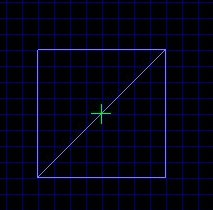I hear you saying, "That's great...but how do I make it 3D?" Remember I told you about "extruding or lofting." Well, you're bright, I'm sure you have already seen "Loft" on the menu a the top of the screen. If you choose Loft and then Extrude we can make our box into a cube. You may have to move or resize the 2D editor window to see it, but a dialog box pops up. Don't change Group Name and make sure the Loft Plane Z is checked. On the right for depth let's put in 128. Now click build. Nothing happened in the 2D editor but it just made your brush in UnrealEd into a cube. Close the 2D editor and look at it. You should have a pretty basic 128 sq cube. Now it would be silly to make that with the 2D editor when you have a cube button, but we did a square just to show you how Extrude works. How does it work? It takes the 2d square we drew and "stretches" it up to the depth we indicated in the dialog box. Try another box, this time with a depth of 64.
Okay, Let's make a different shape. Reopen the 2D editor. Don't change anything on the triangle. Go straight to loft-extrude, and set the depth to 128. You should now have a prism shape, or a triangle on it's side that is 128 units tall. You can use this to make a lot of different shapes. Let's build something useful, like an arch. Start by closing the 2D editor and building a room on your map. Make it 256 x 512 x 512. Go ahead and subtract the room and then open the 2D editor. Let's build an arch that is 128 unit stall. Oh no, Math! After years of editing in Doom/Quake/Quake2/Unreal I think in units of 8 so I know that it is going to be 8 boxes on a 16 unit grid. If you don't think in "base 8" then you may want to use a calculator! At any rate, start with a 128 square box in the 2D editor like we made earlier. Now, select the lower left vertex and that should highlight the bottom leg of the box. Now add another vertex. The bottom line should be split in half now. Click and drag the new vertex up until it is touching the new line it created (see below).
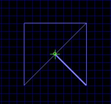Extrude the shape to a depth of 64 and build. Close the 2D window and you should have a rather pointing, small arch thing. You should rotate this so the points are pointing down.
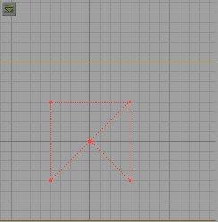You can add this to your room now. Not too functional as an actual arch (too small to walk under) but you could use it for decorations or something. Try some other shapes, with more sides and different depths to get a feel for how it works.
Other OptionsOkay, remember how we had to rotate the little arch thing? That is because we lofted it on the Z axis. That is, we told the editor the object was "laying flat" and we wanted it lofted "up." go in and make the shape again and this time before you loft it, set the Loft Plane to X. This tells the editor the object is standing as it if the bottom of the 2D editor window was "down" and we pulled it shape along the X axis. Now when you build it should be "standing up." Try making a shape and lofting it on the different Loft Planes to get familiar with how the editor uses loft planes to place your object. You are probably curious now what the other Loft options do. We have only used Extrude so far. Logically you should be able to figure out what the others do, especially if you are familiar with 3D models. I will run through them quickly.
Build Sheet: Does just that. Makes the shape a flat sheet. notice there is no dialog box for this lofting option. Revolve: See below Extrude: You already know Extrude to a point: see below Bevel: Works like extrude except it puts a cap on the object. The option to set the depth works just like extrude, and then the cap height option tells the editor where you want the bevel to taper to. It works the same way that putting a cap on a cone works.
Extrude to a Point.This works like the bevel option only it will taper the object to a point. Think of it as bevel with a 0 cap height. This is great for making pyramid shapes. Simply make a square and extrude it to a point setting the depth however high you want the pyramid.
RevolveRevolve is cool for making donut shapes and curved hallways. When you are using revolve the editor basically builds the object AROUND the center point (that green cross I mentioned earlier). Open the 2D editor and reposition the triangle vertices until the triangle looks like the image below. Be sure to have the whole shape either left or right of the center point. If you don't and you try to revolve it the editor will warn you (a rare instance when it doesn't crash if you do something wrong!:)
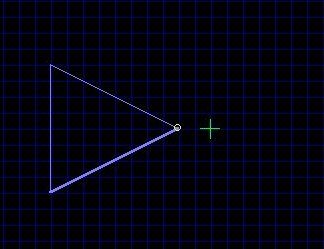Now go to loft-revolve. In the dialog make sure the loft plane is Z and set the number of sides per 360 to 16 and number of sides to 16. Hit build. You should have something like this:
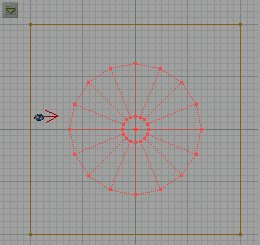 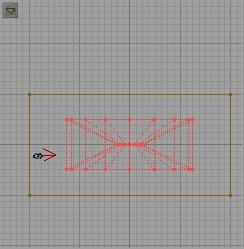See how the editor lofts the shape around the center point? The number of sides per 360 obviously tells how many sides it will have in a full circle, and the number of sides tells it how much of the circle to build. If you set the #/360 to 16 and the number of sides to 8 is will build...anyone?....right! Half a circle! An Arc to you and I. Go ahead and try it using different numbers for the number of sides and number/360. But don't do something stupid like 12 sides per/360 and 128 sides. You will only get a stupid result. Going back to our example if we were to subtract that from the world, we would have a room rather round shaped with sloping floors and ceilings and a column in the middle. That column width is determined by the distance you put the 2D shape from the center point. The slope on the floor and ceiling are determined by the angle you have the "top and bottom" of the shape. Imagine the 2D shapes you make are like looking at a cross section of your 3D shape. If we made the starting shape square you would get a flat floor and ceiling. Play with it and see how you can slant the floor, ceiling, etc...
Arches and DoorwaysOkay, you have learned a lot about the 2D editor and should have a fairly good idea how it works. Now I will show you a very powerful feature of it. In the 2D editor you can import BMP files to use as a "guide" for making your shapes that align with textures. This is how I (and the Unreal Level builders) make doors and arches. Let's learn how. To start with let's get a fresh map. close the 2D editor and in UnrealEd go to File and New level. Answer yes when it asks you to confirm. Select a texture set...let's use NaliCast.utx Pick a nice wall texture. Now build a basic room 256 x 512 x 512. Now in the texture browser choose ARCH to see the arch textures. Let's pick an easy one. See the very last arch texture (WRC-Door).
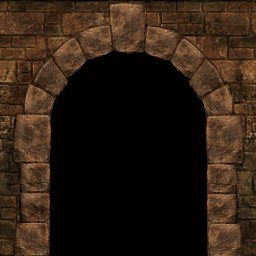You can export this image so we can import it into the 2D editor. To do that highlight the texture and then click EXPORT at the bottom. Name it something cool like WRC-DOOR. If you noticed you can only export as a PCX file. I already told you that you must import a BMP file. So we need to convert the PCX we just saved as a BMP. The easiest way (and most universal since we are all using windows, right?) is to open the exported PCX in Windows Paint and then save it as a BMP. UnrealED exports the file to the Texture directory. Open Paint and find the PCX and open it. Now choose file, and save as and it should default to a BMP and already have it named for you. The only thing you need change is the directory, so that it saves it in the System directory. Once saved as a BMP close Paint and go back to UnrealEd. OPen the 2D editor and on the menu go to Image and Load image. You should see your BMP file there. Double click it to open it. Now your arch picture should appear in the 2D editor.
Now we need to manipulate and add vertices until we have surrounded the BLACK area of the image. Do this by lining up the lines with the edge of the stones in the image and add vertices, moving from left to right around the image. Now, you will see that we can't line the vertices up perfectly because the vertex wants to snap to the grid. You can go to Grid on the menu and uncheck Snap to grid to fix this. But this makes it harder to line up the Straight sides.
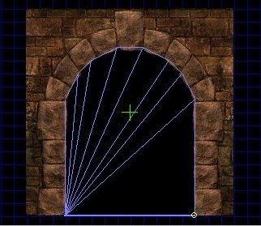One you have it like this then go ahead and extrude using Y plane and 32 depth. Now, the arch hole brush should appear in UnrealEd, only upside down. We can rotate this till it's right. Now, we are going to use this brush to "cut out" our doorway. What we need to do now is build a wall to subtract it from. First EXPORT your new brush. Call it NaliArch or something. Close the 2D editor and build a wall that "cuts" our room in half. Make this wall 256 x 32 x 512. Now select the arch texture we have been using and add the wall. Now, we can see that the arch texture is half as wide as our wall. Align your wall (on both sides) so that we have two arches like below.
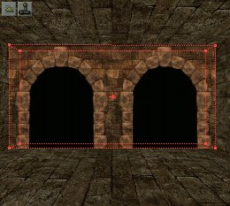Now go to Brush and import and import the arch brush. Now align the brush so that it covers the black portion of one of the arches on the wall. Use the 2D views to center the brush on the wall and then slide it until it covers the black portion like so:
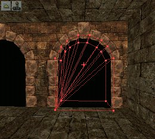Now if you left snap on in the 2d editor it won't line up perfect. That is fine for the purpose of this tutorial. Once you have the brush aligned correctly then subtract it from the wall. You should now have a hole where we want it (the black part should be gone and a hole exists where the black used to be). Now do the same thing to the other arch on the wall. You should now have a room separated by a wall with two arched doorways in it.
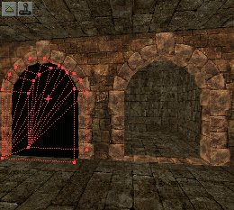What's really cool is that if we wanted to put doors in those door ways, we could use the same brush we used to cut the holes and the doors would fit perfectly! You can add a player start and lights and rebuild and run the map if you want.
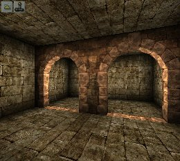 Arch OptionsNow, if we wanted a true arch we could have simply build a 256 x 256 x 32 wall, floated it in the air (but not in out start room, it's not tall enough!) and put the arch texture on it and then cut the doorway out. We would have had something like this:
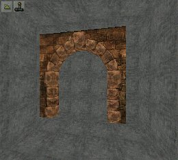Here's a little project for you. Build a room like this screenshot and see how close you can match it using what you have learned today. If you like send me the .unr (preferably zipped!)and I can see how well you did. You don't win anything and this is not a contest. I just like to see what my "students" learn! Note: I only used one (1) brush!
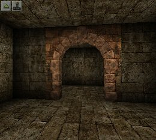Play around with what you have learned about the 2D shape editor. It's a powerful tool, especially with the lofting options and the ability to import images to align your shapes with your textures. Again you should probably read Myscha's article at Unrealized.
Now, if you can wait until my next tutorial I will show you how to use the FLOOR LOFTER!